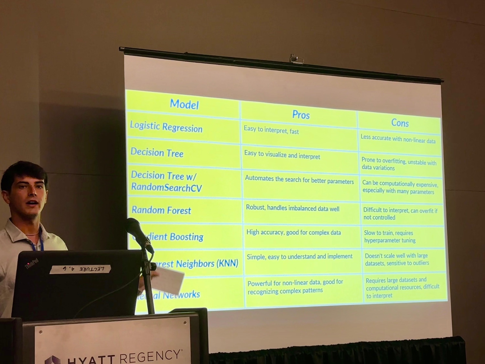
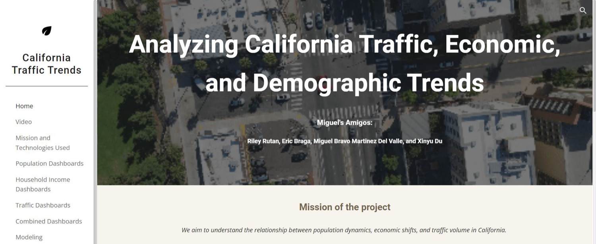

iHeatApp
Bilingual heat-risk forecasts, geospatial maps and an AI assistant for Imperial Valley.
- Python
- xarray
- LLM
Project fieldbook
Four projects receive the full case-study treatment because they best represent my current work. The complete index below keeps every project—from production systems to early visualization experiments—in context.
Featured case studies
Climate informatics · Full-stack AI
A mobile-focused platform that turns hourly weather forecasts into understandable heat-risk maps and contextual guidance for agricultural communities in California’s Imperial Valley.
Outdoor heat exposure is not fully represented by air temperature alone. Workers and supervisors need localized Wet Bulb Globe Temperature information, but the underlying forecast data and technical definitions are difficult to access and interpret.
As Junior AI & Data Scientist, I developed and validated Python forecast pipelines using NOAA NBM data, integrated hourly WBGT outputs into the visualization workflow, and helped build the bilingual AI assistant and full-stack product.
The work produced a publicly documented SDSU research product and supported peer-reviewed research on its system architecture, modeling framework and user-centered evaluation.
Capstone · Data product engineering
A full-stack application that makes hourly climate data explorable through a fast map interface and an AI assistant that can interpret screenshots and weather patterns.
NOAA’s real-time mesoscale analysis is scientifically valuable, but its source archive is enormous and its file formats are not designed for casual exploration in a web browser.
I contributed across the stack: environmental data processing, API design, geospatial conversion, React and Deck.gl visualization, Docker deployment and the physical Raspberry Pi infrastructure.
The project demonstrates end-to-end ownership under real hardware constraints. The source archive exceeds 91 TB; instead of pretending one device can hold it all, the system keeps a focused rolling cache and serves the slice a user needs.

Machine learning · Conference research
A large-scale classification study combining United States flight history with weather context, evaluated across several model families and communicated at WUSS 2024.
Delays and cancellations are imbalanced outcomes affected by time, route, carrier and weather. A useful comparison required careful merging, feature engineering and metrics that did not hide minority-class performance.
I worked within the project team on the machine-learning workflow, analysis and communication, then presented the research publicly as a WUSS student scholar.
XGBoost delivered approximately 0.68 accuracy, 0.70 weighted F1 and 0.62 macro F1. The gap between weighted and macro performance is part of the finding—not a number to hide.

Geospatial analytics · Team project
An observational analysis connecting a decade of traffic counts with county-level population and income data, delivered through maps, dashboards and statistical models.
How do traffic patterns vary alongside population growth, geographic location and economic conditions across a state as large and diverse as California?
I cleaned and analyzed population data, contributed to the combined dataset and visualizations, and helped design and write the public-facing project website.
Several high-scoring model variants relied on closely related traffic measures or geographic coordinates. Today I would add spatial cross-validation and stricter leakage controls before treating predictive performance as generalizable.
Complete index
The early experiments stay because they show progression. Filters make the archive easy to scan without pretending every project has the same scope.
Bilingual heat-risk forecasts, geospatial maps and an AI assistant for Imperial Valley.
A containerized climate platform with interactive maps and vision-assisted interpretation.
Large-scale aviation and weather classification presented at WUSS 2024.
Traffic, population and income patterns across California from 2013 to 2022.
Six regression approaches compared on 53,940 diamonds, including transformed targets.
Relational database design, AWS RDS deployment and analytical dashboards for pharmacy operations.
Seasonal weekly sales forecasting for Store 13 using a focused SARIMA model comparison.
A multivariate study whose weak predictive signal became an important methodological result.
An interactive game used to learn the p5.js drawing loop, events and collision logic.
A zoomable, searchable SDSU campus map with building-level information and imagery.
A map that searches recent news, locates results and connects place to story context.
Multivariate and multitemporal views of state crime rates and moving geographic centroids.
Next
The résumé condenses the project archive into the experience and skills most relevant to professional work.